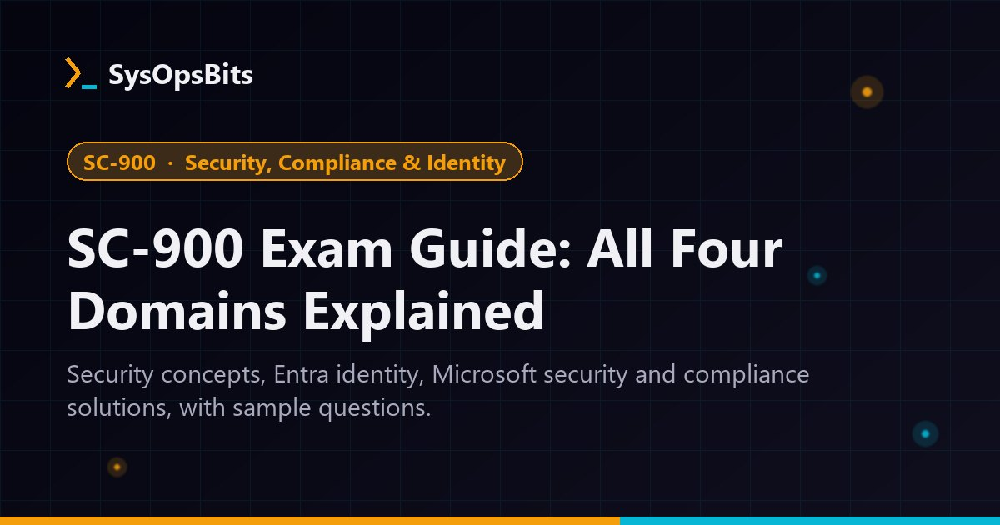

SC-900 Microsoft Security, Compliance, and Identity Fundamentals Exam Complete Guide

Are you preparing for the Microsoft Security, Compliance, and Identity Fundamentals (SC-900) certification exam? This comprehensive guide covers everything you need to know to pass the exam on your first attempt. We'll break down all four exam domains, provide real-world scenarios, and include sample questions with detailed explanations to test your knowledge.
Understanding the SC-900 Exam
The SC-900: Microsoft Security, Compliance, and Identity Fundamentals exam validates foundational knowledge of security, compliance, and identity concepts and related cloud-based Microsoft solutions. This exam is designed for candidates looking to demonstrate foundational-level knowledge across the security, compliance, and identity (SCI) space.
The exam measures your ability to accomplish the following technical tasks:
- Describe the concepts of security, compliance, and identity (15-20%)
- Describe the capabilities of Microsoft Entra (30-35%)
- Describe the capabilities of Microsoft security solutions (25-30%)
- Describe the capabilities of Microsoft compliance solutions (15-20%)
Domain 1: Security, Compliance, and Identity Concepts (15-20%)
This domain covers the foundational concepts that are essential to understanding Microsoft's security, compliance, and identity solutions.
Key Concepts Covered:
- Shared responsibility model
- Zero Trust model
- Data residency and data sovereignty
- Identity providers and directory services
- Authentication vs. authorization
- Multi-factor authentication (MFA)
- Conditional Access
- Encryption concepts (at rest, in transit)
- Compliance manager and compliance score
Real-World Scenario:
A company wants to implement a Zero Trust security model for their remote workforce. They need to ensure that only compliant devices can access corporate resources, and that access is continuously verified based on risk signals. Which Microsoft solutions would they primarily use?
Answer: They would use Microsoft Entra ID for identity and access management with Conditional Access policies, Microsoft Defender for Endpoint for device compliance, and Microsoft Intune for device management to ensure only compliant devices can access resources.
Domain 2: Microsoft Entra Identity and Access Capabilities (30-35%)
This domain focuses on Microsoft's cloud-based identity and access management solution, Microsoft Entra ID (formerly Azure Active Directory).
Key Concepts Covered:
- Microsoft Entra ID fundamentals
- Identity types (user, group, device, application)
- Authentication methods (password, MFA, passwordless)
- Self-service password reset (SSPR)
- Microsoft Entra Join and hybrid join
- Conditional Access policies
- Role-based access control (RBAC)
- Identity protection and risk detection
- Entitlement management and access reviews
Real-World Scenario:
An organization wants to ensure that users accessing sensitive financial applications from untrusted networks must use multi-factor authentication, while users accessing from the corporate network can use single sign-on. How can they achieve this using Microsoft Entra ID?
Answer: They would configure Conditional Access policies in Microsoft Entra ID that require MFA for the financial applications when accessed from untrusted locations (based on IP ranges or named locations), while allowing single sign-on access from trusted corporate network locations.
Domain 3: Microsoft Security Solutions Capabilities (25-30%)
This domain covers Microsoft's security solutions that help protect against threats across identities, data, applications, and infrastructure.
Key Concepts Covered:
- Microsoft Defender for Cloud
- Microsoft Sentinel (SIEM/SOAR)
- Microsoft Defender for Endpoint
- Microsoft Defender for Identity
- Microsoft Defender for Office 365
- Microsoft Defender for Cloud Apps
- Network security in Azure (firewalls, DDoS protection)
- Security management and secure score
- Microsoft Security Copilot
Real-World Scenario:
A security analyst notices suspicious login attempts from unusual geographic locations targeting executive accounts. They want to automatically detect, investigate, and respond to these potential identity-based threats. Which Microsoft solution would be most appropriate?
Answer: Microsoft Defender for Identity (formerly Azure ATP) would be most appropriate as it specializes in detecting and investigating identity-based threats, including suspicious login attempts, credential theft, and lateral movement activities targeting user accounts.
Domain 4: Microsoft Compliance Solutions Capabilities (15-20%)
This domain covers Microsoft's compliance solutions that help organizations meet regulatory requirements and manage data governance.
Key Concepts Covered:
- Microsoft Purview compliance portal
- Information protection and governance
- Data loss prevention (DLP)
- Insider risk management
- eDiscovery and auditing
- Records management
- Data classification and sensitivity labels
- Service Trust Portal and privacy principles
- Compliance Manager and compliance score
Real-World Scenario:
A healthcare organization needs to ensure that patient health information (PHI) contained in emails and documents is properly protected according to HIPAA regulations. They want to automatically detect and prevent unauthorized sharing of this sensitive information. Which Microsoft solution would help them achieve this?
Answer: Microsoft Purview Data Loss Prevention (DLP) would help them automatically detect, monitor, and protect PHI content in emails, documents, and other locations based on predefined policies, helping ensure HIPAA compliance.
SC-900 Sample Questions with Detailed Explanations
Test your knowledge with these sample questions that cover all four domains of the SC-900 exam.
Question 1: Security Concepts
Which of the following best describes the Zero Trust security model?
- A. Trust all internal network traffic by default
- B. Verify explicitly, use least privilege access, and assume breach
- C. Focus solely on perimeter network security
- D. Disable all external network connections
Correct Answer: B
Explanation: The Zero Trust security model operates on three core principles: verify explicitly (always authenticate and authorize based on all available data points), use least privilege access (limit user access with just-in-time and just-enough-access), and assume breach (operate as if your network has been compromised and verify each request as though it originates from an uncontrolled network). This approach moves away from the traditional "trust but verify" model that assumed everything inside the network was safe.
Question 2: Microsoft Entra ID
An organization wants to allow users to reset their passwords without contacting the IT helpdesk. Which Microsoft Entra ID feature should they implement?
- A. Conditional Access
- B. Self-service password reset (SSPR)
- C. Multi-factor authentication
- D. Identity Protection
Correct Answer: B
Explanation: Self-service password reset (SSPR) allows users to reset their passwords or unlock their accounts without administrator intervention. Users can use various authentication methods (such as phone, email, or security questions) to verify their identity and reset their passwords, reducing helpdesk calls and improving user productivity.
Question 3: Microsoft Security Solutions
Which Microsoft solution provides cloud-native security information and event management (SIEM) and security orchestration, automation, and response (SOAR) capabilities?
- A. Microsoft Defender for Cloud
- B. Microsoft Sentinel
- C. Microsoft Defender for Endpoint
- D. Microsoft Defender for Identity
Correct Answer: B
Explanation: Microsoft Sentinel is a scalable, cloud-native SIEM and SOAR solution that provides intelligent security analytics and threat intelligence across the enterprise. It collects data from users, devices, applications, and infrastructure across on-premises and multiple cloud environments, enabling organizations to detect, investigate, and respond to threats using built-in AI and machine learning capabilities.
Question 4: Microsoft Compliance Solutions
Which Microsoft Purview solution helps organizations identify, classify, and protect sensitive information wherever it lives or travels?
- A. Insider risk management
- B. eDiscovery
- C. Information protection and governance
- D. Audit (standard)
Correct Answer: C
Explanation: Information protection and governance in Microsoft Purview helps organizations discover, classify, and protect sensitive information across Microsoft 365, Windows 10/11, and macOS. It includes capabilities such as sensitive information types, sensitivity labels, auto-labeling policies, and encryption to ensure that sensitive data is properly protected according to its classification.
Question 5: Shared Responsibility Model
In the shared responsibility model for cloud services, which of the following is always the responsibility of the cloud customer, regardless of the service model (IaaS, PaaS, or SaaS)?
- A. Physical security of datacenters
- B. Data and information
- C. Network controls
- D. Host infrastructure
Correct Answer: B
Explanation: In the shared responsibility model, the customer is always responsible for their data and information, regardless of the cloud service model (IaaS, PaaS, or SaaS). This includes data classification, data protection, and ensuring that data handling complies with relevant regulations. Microsoft is responsible for the security of the cloud infrastructure, but customers must secure their data within that infrastructure.
Exam Preparation Tips
To maximize your chances of passing the SC-900 exam on your first attempt, consider these preparation strategies:
- Start with the fundamentals: Ensure you have a solid understanding of basic networking, cloud computing, and IT concepts before diving into the exam topics.
- Use Microsoft Learn: Leverage the free Microsoft Learn modules that directly align with the exam objectives. The four learning paths we referenced in this guide are excellent resources.
- Focus on scenario-based questions: The SC-900 exam emphasizes practical understanding over rote memorization. Practice applying concepts to real-world scenarios.
- Understand the relationships: Focus on how the different Microsoft solutions work together rather than memorizing individual features in isolation.
- Take practice exams: Use official Microsoft practice tests to familiarize yourself with the question format and identify areas that need more study.
- Join study communities: Participate in Microsoft certification forums and study groups to share knowledge and get answers to your questions.
Recommended Resources
To further enhance your preparation, consider these authoritative resources:
- Introduction to security, compliance, and identity concepts
- Introduction to Microsoft Entra
- Introduction to Microsoft security solutions
- Introduction to Microsoft Purview and Microsoft's privacy principles
- Official SC-900 exam page
Conclusion
The SC-900 Microsoft Security, Compliance, and Identity Fundamentals certification is an excellent starting point for anyone looking to build a career in cloud security, compliance, or identity management. By mastering the four domains covered in this guide—security concepts, identity and access capabilities, security solutions, and compliance solutions—you'll be well-prepared to pass the exam and demonstrate your foundational knowledge of Microsoft's security, compliance, and identity solutions.
Remember that the SC-900 is designed as an entry-point certification, so don't be intimidated if you're new to these concepts. Focus on understanding the core principles and how Microsoft's solutions address real-world security, compliance, and identity challenges. With proper preparation using the resources and strategies outlined in this guide, you'll be on your way to earning your SC-900 certification.
Last updated: May 24, 2026